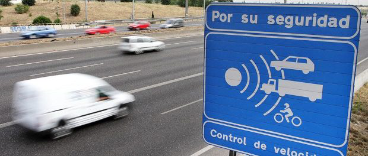

La práctica consiste en realizar un paso radar de carretera donde podamos regular la velocidad máxima a la que detectaremos la infracción con varios de los componentes que hemos utilizado hasta ahora.

(1) x Placa Arduino
(1) x Protoboard
(1) x LED azul de 5mm
(1) x LED rojo de 5mm
(1) x LED verde de 5mm
(2) x Resistencia de 220 ohmios
(1) x Interruptor de presión
(1) x Sensor ultrasónico
(1) x Potenciómetro
(1) x Pantalla LED
(1) x Servomotor
(-) x M M cables (cables de puente de macho a macho)
El radar consistirá en:
- Mediante el interruptor de presión se activará o desactivará todo el circuito, encendiendo un led azul
cuando esté activado.
- Al activarse el circuito, pondremos en funcionamiento nuestro radar, que mediante el sensor ultrasónico
será capaz de determinar la velocidad a la que pasan los vehículos.
- La velocidad a la que pase cada vehículo se mostrará en la pantalla LED.
- La velocidad máxima a la que se puede circular se indicará en dicha pantalla LED mientras no esté
pasando ningún vehículo.
- Esta velocidad máxima será seleccionada mediante el potenciómetro, teniendo dos valores, uno cuando el
potenciómetro esté al máximo y otro cuando el potenciómetro esté al minimo.
- La selección de la velodidad máxima hará girar el servomotor para indicar dicha velodidad máxima en una
señal resversible.
- Al pasar nuestro vehículo, se detectará la velocidad del mismo, mostrándola en la pantalla LED y
encendiendo el LED verde si estamos por debajo de la velocidad máxima y el LED rojo si sobrepasamos esa
velocidad.